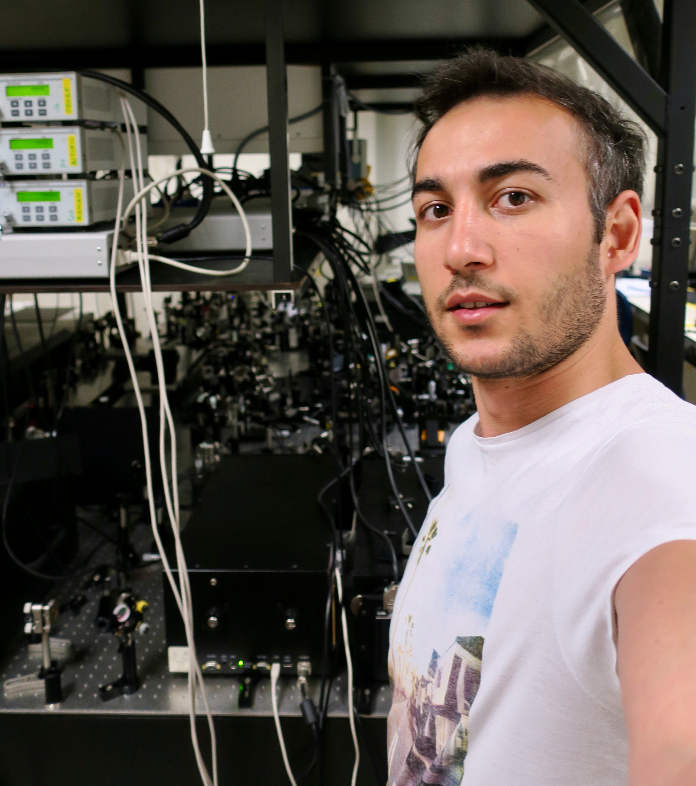

Doing experiments.
Panoramic view of Laser Lab at VU Amsterdam.
Inside of a pump laser!
Research
Education in Science
-
Ph.D., Biophysics, Present
VU Amsterdam -
M.Sc, Chemistry, 2013
Middle East Technical University -
B.Sc, Chemistry, 2010
Middle East Technical University
Research Experience
-
Ultrafast Spectroscopy.
- Time-resolved UV-VIS Spectroscopy
- Time-resolved Mid-IR Spectroscopy
- Femtosecond Stimulated Raman Spectroscopy
- Time-domain Terahertz Spectroscopy
- Photoactive Yellow Protein
- Fuel oil characterization
Curious and working on..
- Data visualization of time-resolved data in Python. I wrote python code to plot long time scale time-resolved data in lin-log plot. To reach the codes and readme, click here. I have an idea of creating a GUI on python to visualize the codes. Any help & feedback are welcome.
Publications
- Dielectric properties of ethanol and gasoline mixtures by terahertz spectroscopy and an effective method for determination of ethanol content of gasoline.
- Dielectric properties of diesel and gasoline by terahertz spectroscopy.